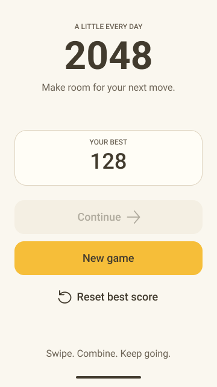

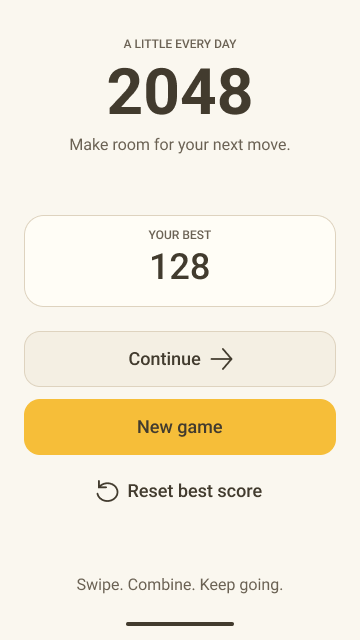

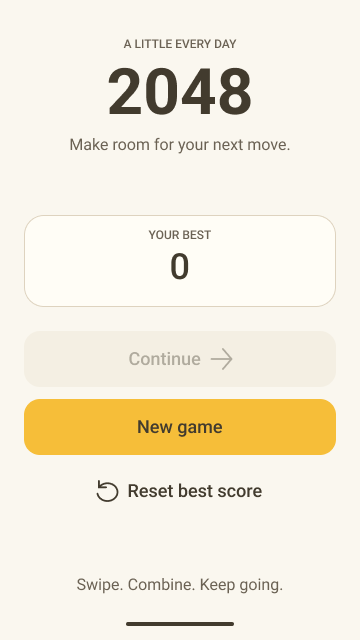

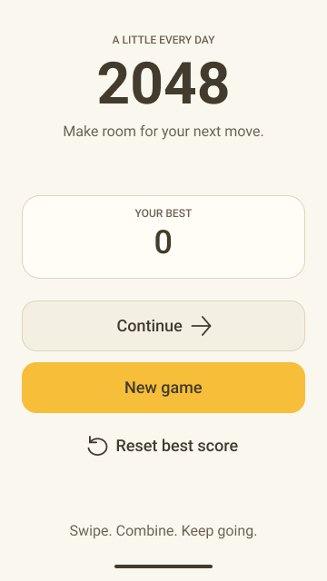

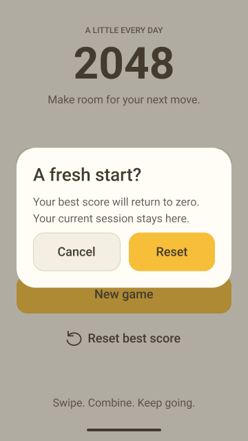


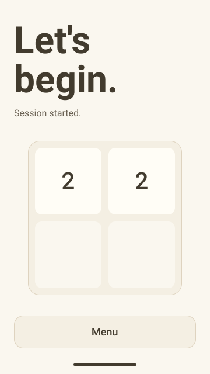

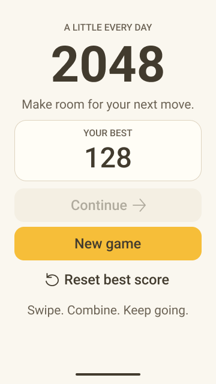

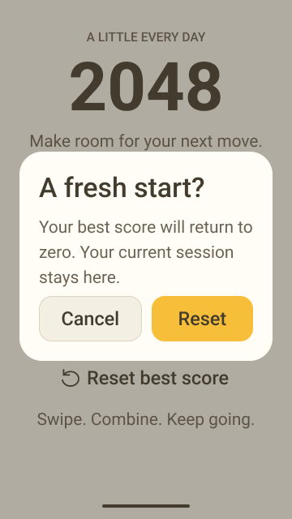

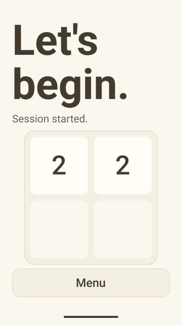

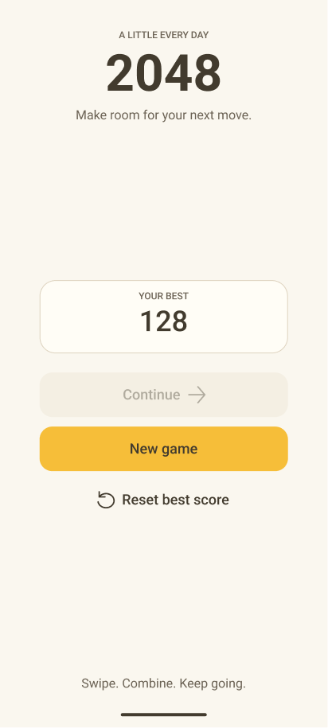

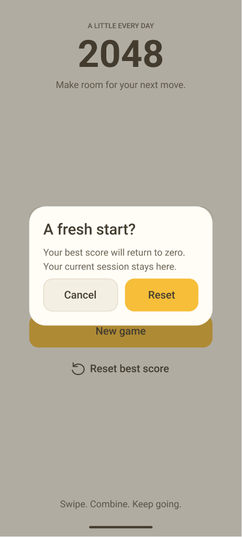

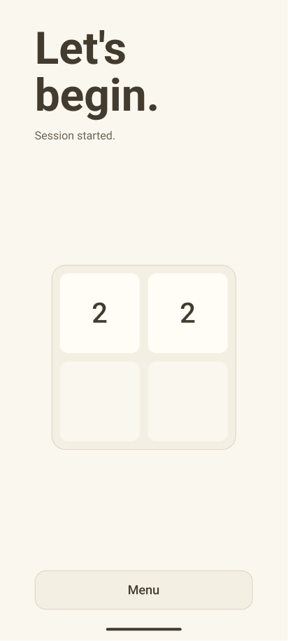

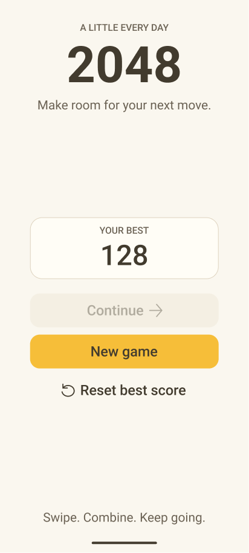

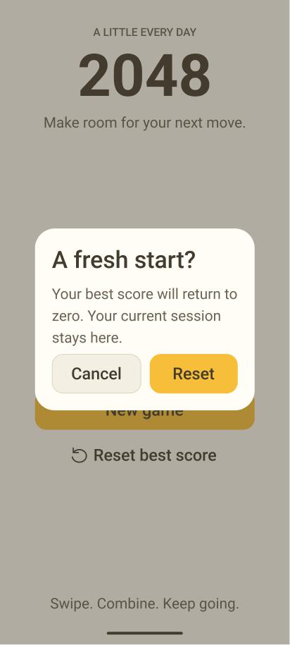

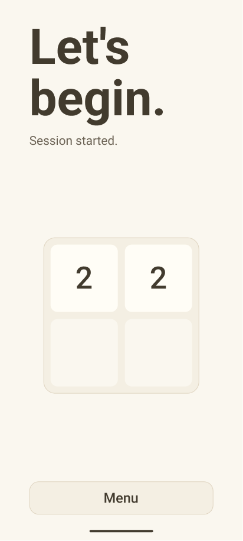
以下是固定包中的 16 幅实际 Figma 导出图。页面只用于查看设计，不模拟 Android 运行。D、批准范围及完整摘要见外层审核页。
小屏 360×640 dp；常规屏源 411.43×914.29 dp、导出 412×915。字体分别为 1.0／1.3。其余状态按同家族布局替换分数及 Continue 状态；详细规则见 handoff。














